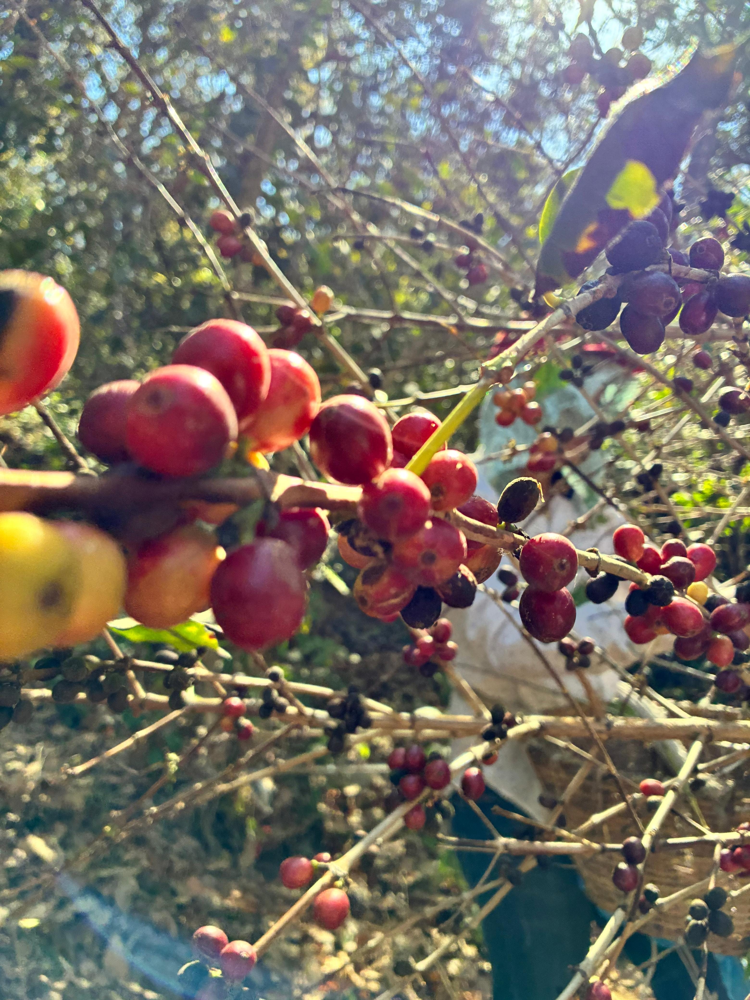
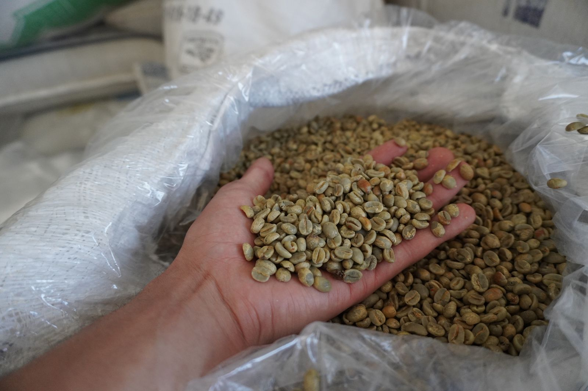
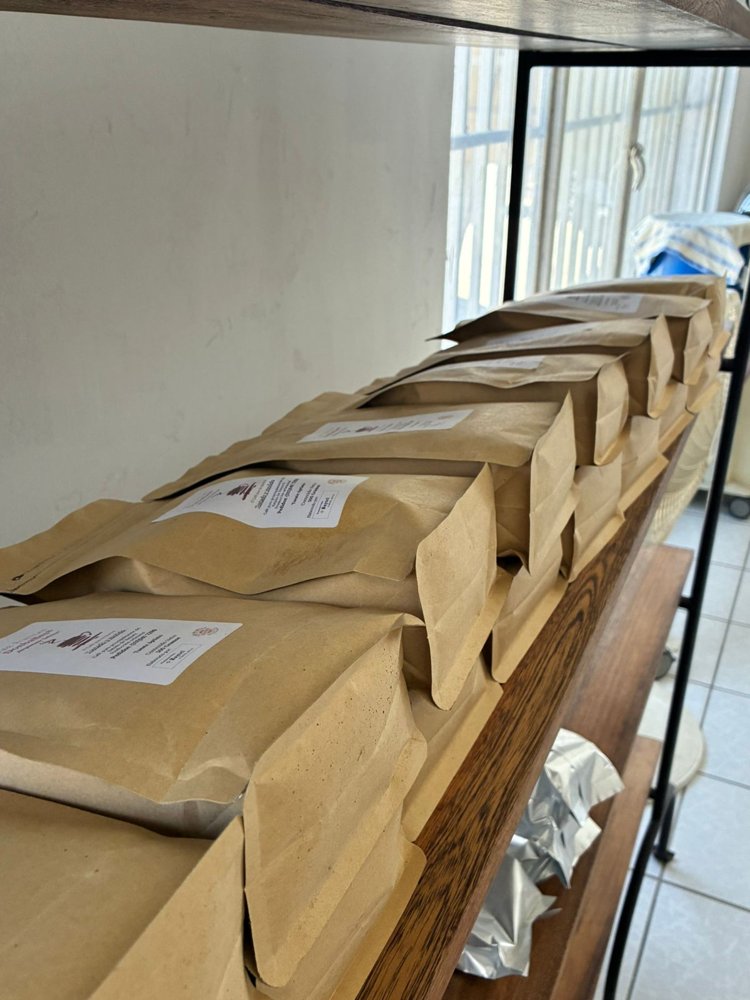
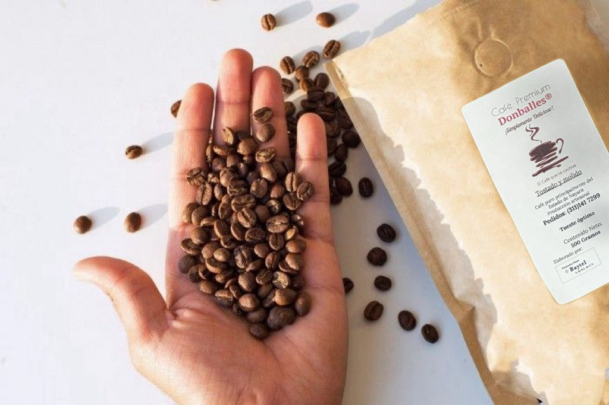

“Del origen a la excelencia en cada taza.” ☕

Nuestros cultivos pertenecen a la tierra Nayarita, el cual se lleva a cabo bajo estrictos estándares de calidad, en condiciones cuidadosamente controladas que favorecen el desarrollo óptimo de cada planta. Se emplean prácticas responsables y sostenibles que respetan el entorno, asegurando un equilibrio entre productividad y cuidado del medio ambiente. Cada etapa del crecimiento es supervisada con precisión, garantizando que el fruto alcance su máximo potencial en sabor, aroma y calidad, desde su origen.
La recolección es un proceso cuidadosamente ejecutado a mano, donde cada cereza es seleccionada en su punto perfecto de maduración. Este meticuloso trabajo garantiza la máxima calidad, preservando la esencia, frescura y riqueza natural del fruto. Nuestro compromiso con la excelencia comienza en el campo, donde cada detalle es atendido con precisión para ofrecer una materia prima excepcional, base de un producto final distinguido.
Utilizamos camas africanas para llevar a cabo un secado lento, uniforme y cuidadosamente controlado, diseñado para preservar las cualidades esenciales del fruto. Al elevar el grano del suelo, permitimos una circulación de aire en 360°, evitando cualquier tipo de contaminación y favoreciendo una reducción de humedad homogénea por ambos lados. A través de técnicas precisas y una supervisión constante en cada lote, se logra concentrar de forma natural los azúcares, sabores y aromas del café. Este proceso no solo garantiza una limpieza excepcional en taza, sino también una consistencia superior y una calidad distintiva. El resultado es un perfil más definido, donde destaca la dulzura natural del fruto y se resalta el carácter único de cada cosecha, sentando la base para una experiencia final verdaderamente especial.

El café oro representa una etapa clave en la transformación del grano, donde, tras un proceso cuidadoso, se obtiene el grano verde listo para su selección y resguardo. En esta fase, se preservan sus características esenciales, manteniendo intacto su potencial de aroma, cuerpo y sabor. Cada lote es evaluado bajo criterios de calidad rigurosos, garantizando uniformidad y excelencia. Este estado puro del café es la base sobre la cual se construye una experiencia final refinada y de alto nivel.
Cada grano tiene su momento.
A 206 °C, el café alcanza su punto exacto de transformación.
El calor despierta sus compuestos naturales, desarrollando aroma, cuerpo y dulzura con precisión.
No es solo tostado. Es control total sobre cada variable.
Tiempo, temperatura y curva trabajan en equilibrio para revelar su verdadero carácter.
El resultado: un café limpio, estructurado y profundamente expresivo.

Nuestro café se presenta en empaque tipo kraft, diseñado para combinar funcionalidad con una estética natural y elegante. Nuestras bolsas incorporan una válvula desgasificadora unidireccional, que permite al café “respirar” liberando CO₂ mientras impide la entrada de oxígeno, conservando así la frescura, el aroma y las cualidades del grano recién tostado por mucho más tiempo. Además, cuentan con cierre hermético tipo zipper y sellado térmico, garantizando una protección óptima desde el momento del envasado hasta su consumo. Cada detalle ha sido pensado para mantener la integridad del producto y ofrecer una experiencia superior. Disponible en presentaciones de 500 g y 1 kg, este empaque refleja nuestro compromiso con la calidad, la conservación y la excelencia en cada etapa.

Más que café, ofrecemos una experiencia que nace en el origen y se perfecciona en cada etapa del proceso. Desde el cultivo hasta el empaque, cada detalle refleja nuestro compromiso con la calidad, la precisión y la excelencia. Cada taza es el resultado de dedicación, cuidado y pasión por crear un producto que no solo se disfruta, sino que se distingue.